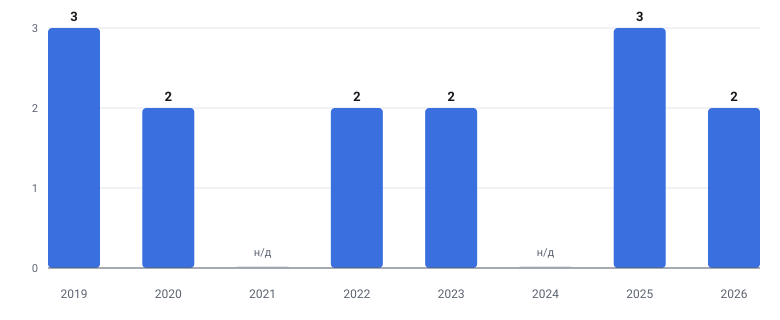
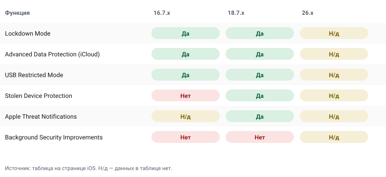

Данные
Числа, которые лежат в основе разделов. Построены из таблиц сайта, а не из внешних датасетов — источник указан под каждым графиком.
CVE WhatsApp по годам

Диаграмма считает только те записи, которые перечислены в таблице на странице WhatsApp. 2021 и 2024 помечены как «н/д»: в таблице для них нет строк, и это не то же самое, что ноль. Для 2024 в отчёте есть отдельная оговорка — отсутствие вендорских CVE является результатом проверки базы, а не доказательством «нулевого года».
Что видно: пик 2019 года — эпоха VoIP-эксплойтов (CVE-2019-3568). После 2022 года критичность падает: в 2023–2026 нет ни одной уязвимости уровня 9.8, зато появляются логические ошибки в новых функциях — синхронизации устройств и AI-ответах.
Функции iOS по версиям

Матрица отвечает на практический вопрос: что даст обновление телефона. Например, Stolen Device Protection появляется только с iOS 17.3, а Background Security Improvements — с 26.1. Поэтому «у меня последняя версия для моей модели» и «у меня все функции» — разные утверждения.
Источник — таблица на странице iOS. Для 26.x в таблице данных нет, поэтому везде стоит «н/д».
Как это читать
- Диаграмма не заменяет таблицу: в таблице есть номера CVE и оговорки, на графике — только количество.
- «Н/д» — это не ноль. Разница принципиальная: ноль означает проверенный факт, «н/д» — отсутствие данных.
- Данные лежат в
site/data/charts.json, графики собираются из них при каждой сборке. Если поправить JSON, картинка изменится.
Что можно добавить
- Таймлайн инцидентов: события есть в JSON, но для графика нужен отбор — иначе 22 подписи на одной линии нечитаемы.
- Матрицу «вектор × платформа» — но она качественная, и любая числовая шкала там будет выдумкой.
- Динамику аудитории мессенджеров — требуются сторонние данные, которых у нас нет.